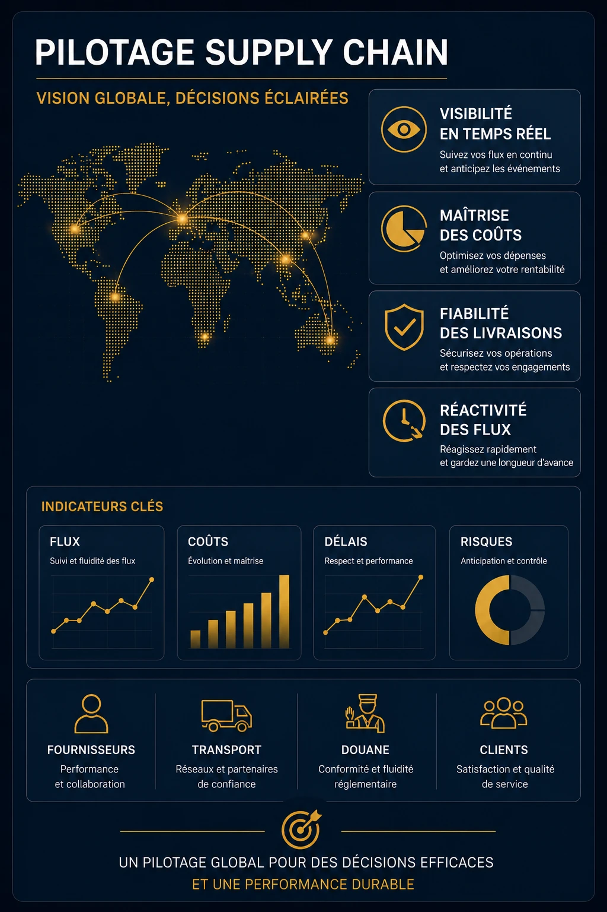

Tu crecimiento cambia el juego: los flujos se complejizan, las decisiones se vuelven más estratégicas y la organización que funcionaba ayer empieza a mostrar sus límites. Contratar un Director Supply Chain full-time no siempre es la respuesta correcta, ni el mejor momento.
La Dirección Supply Chain Fraccionada de STRANEXO te permite acceder rápidamente a un expertise de dirección adaptado a tus necesidades y a tu ritmo. Según tu organización, esta intervención puede tomar la forma de una Dirección Supply Chain a tiempo parcial, una Dirección Logística a tiempo parcial o una Dirección de Transporte a tiempo parcial.
Trabajo junto a tu dirección para estructurar tu organización, reforzar la gestión de tu Supply Chain y mejorar de forma sostenida la performance de tus flujos, tanto en el mercado local como en tus operaciones con el Mercosur y la Unión Europea.

Tu empresa crece rápido y tu organización de Supply Chain necesita ganar madurez para sostener ese crecimiento en el tiempo.
Un responsable clave deja la empresa o se ausenta. Necesitás un expertise de dirección para mantener la gestión de tus operaciones.
Tus flujos se vuelven más complejos de coordinar, sobre todo entre Argentina, el Mercosur y Europa, y necesitan una visión global de tu organización.
Querés estructurar tu Supply Chain antes de crear un puesto permanente o antes de una nueva etapa de desarrollo.
Buscás un acompañamiento estratégico, flexible y adaptado a tus necesidades, sin las cargas de una contratación full-time.
Una Dirección Supply Chain Fraccionada no consiste en intervenir puntualmente sobre un tema aislado. Mi rol es acompañar a tu dirección en la estructuración, la gestión y la evolución de tu organización de Supply Chain.
Aporto una mirada externa, una visión global de tus flujos y una experiencia operativa para ayudarte a tomar las decisiones correctas, coordinar a los actores de tu Supply Chain y acompañar de forma sostenida el crecimiento de tu empresa.
Cada intervención se construye alrededor de tus prioridades, con un objetivo simple: reforzar tu organización mientras tus equipos ganan en competencia.
Contás con una visión más clara de tus flujos, tus prioridades y las oportunidades de mejora.
Los roles, las responsabilidades y los procesos ganan coherencia para reforzar tu eficiencia operativa.
Las distintas áreas trabajan con más fluidez alrededor de objetivos comunes.
Contás con indicadores confiables para gestionar tu Supply Chain con mayor visibilidad.
Tu organización evoluciona al ritmo de tu empresa sin generar rupturas en tus operaciones.
Mejorás de forma sostenida la performance de tus flujos mientras reducís los riesgos operativos.
Cada empresa tiene su historia, sus restricciones y sus prioridades. Adapto mi acompañamiento en consecuencia.
Trabajo algunos días por mes, en un período definido o en el marco de un acompañamiento más regular, según tus desafíos del momento.
Contás con la experiencia de un Director Supply Chain a tiempo parcial, sin las cargas de una contratación full-time.
Según tu contexto, este acompañamiento también puede responder a una necesidad de Dirección Supply Chain Fraccionada, Dirección Logística Fraccionada o Dirección de Transporte Fraccionada, cuando uno de estos temas sea tu principal desafío.
Acompañar la estructuración del Supply Chain de una PyME en fuerte crecimiento para sostener su desarrollo en el tiempo.
Mantener la gestión de las operaciones después de la salida o la ausencia de un Responsable Supply Chain.
Liderar un proyecto de transformación logística, de transporte o de Supply Chain y acompañar a los equipos en el cambio.
Acompañar la internacionalización de los flujos y las organizaciones para reforzar su control, en particular entre Argentina y Europa.
Crear o reorganizar un área de Supply Chain, coordinar varias plantas o acompañar la implementación de un ERP.
Acompañar el desarrollo de competencias de un futuro Responsable Supply Chain y reforzar la organización de forma sostenida.
Un consultor suele intervenir sobre una problemática puntual o un trabajo específico. Una Dirección Supply Chain Fraccionada acompaña a tu empresa en el tiempo, con una visión global de tu organización para estructurarla, coordinarla y hacerla progresar.
No. La idea es adaptar el tiempo de intervención a las necesidades reales de tu empresa. Algunos días por mes suelen alcanzar para aportar un expertise de dirección, manteniendo mucha flexibilidad.
No. Mi rol es aportar una mirada externa, contribuir a las reflexiones, facilitar las definiciones y acompañar la implementación de las decisiones. Las decisiones estratégicas siguen siendo de tu dirección.
Te propongo una primera charla de 30 minutos para entender tu organización, tus desafíos e identificar si este tipo de acompañamiento responde a tus necesidades.
📞 +33 7 68 62 13 03 (Francia)
✉️ axel@stranexo.com